Learning Module 9 Parametric and Non-Parametric Tests of Independence - Part 1: Introduction
Volume 1: Quantitative Methods
Learning Module 9 Parametric and Non-Parametric Tests of Independence
Part 1/2: Introduction (PDF Pages 251–260)
Tập 1: Phương pháp Định lượng (Quantitative Methods)
Học phần 9: Các Kiểm định Tính Độc lập Tham số và Phi tham số (Parametric and Non-Parametric Tests of Independence)
Phần 1/2: Giới thiệu (Introduction) (Trang PDF 251–260)
L E A R N I N G M O D U L E
H Ọ C P H Ầ N
9
9
Parametric and Non-Parametric Tests of Independence
Các Kiểm định Tính Độc lập Tham số và Phi tham số (Parametric and Non-Parametric Tests of Independence)
by Pamela Peterson Drake, PhD, CFA.
tác giả: Pamela Peterson Drake, PhD, CFA.
Pamela Peterson Drake, PhD, CFA, is at James Madison University (USA).
Pamela Peterson Drake, PhD, CFA, làm việc tại Đại học James Madison (Hoa Kỳ).
LEARNING OUTCOMES
MỤC TIÊU HỌC TẬP (LEARNING OUTCOMES)
Mastery The candidate should be able to: explain parametric and nonparametric tests of the hypothesis that the population correlation coefficient equals zero, and determine whether the hypothesis is rejected at a given level of significance explain tests of independence based on contingency table data
Mức độ Thành thạo – Ứng viên cần có khả năng: - Giải thích các kiểm định tham số và phi tham số đối với giả thuyết rằng hệ số tương quan tổng thể (population correlation coefficient) bằng 0, và xác định xem giả thuyết có bị bác bỏ ở một mức ý nghĩa cho trước hay không. - Giải thích các kiểm định tính độc lập dựa trên dữ liệu bảng tiếp liên (contingency table data).
INTRODUCTION
GIỚI THIỆU (INTRODUCTION)
1
1
In many contexts in investments, we want to assess the strength of the linear relationship between two variables—that is, we want to evaluate the correlation between them. A significance test of a correlation coefficient allows us to assess whether the relationship between two random variables is the result of chance. Lesson 1 covers a parametric and a non-parametric approach to testing the correlation between two variables. If we decide that the relationship does not result from chance, then we can use this information in modeling or forecasting using regression models or machine learning covered in later Learning Modules.
Trong nhiều bối cảnh đầu tư, chúng ta muốn đánh giá độ mạnh của mối quan hệ tuyến tính giữa hai biến số—tức là chúng ta muốn đánh giá tương quan (correlation) giữa chúng. Một kiểm định ý nghĩa của hệ số tương quan cho phép chúng ta đánh giá xem liệu mối quan hệ giữa hai biến ngẫu nhiên có phải là kết quả của sự ngẫu nhiên hay không. Bài 1 trình bày cách tiếp cận tham số và phi tham số để kiểm định tương quan giữa hai biến số. Nếu chúng ta kết luận rằng mối quan hệ không phải do ngẫu nhiên mà có, thì chúng ta có thể sử dụng thông tin này trong việc mô hình hóa hoặc dự báo bằng cách sử dụng các mô hình hồi quy (regression models) hoặc học máy (machine learning) được trình bày trong các Học phần sau.
When faced with categorical or discrete data, however, we cannot use the methods discussed in the first lesson to test whether the classifications of such data are independent. If we want to test whether there is a relationship between categorical or discreet data, we can perform a test of independence using a nonparametric test statistic. The second lesson covers the use of contingency tables in implementing this non-parametric test.
Tuy nhiên, khi đối mặt với dữ liệu phân loại (categorical data) hoặc dữ liệu rời rạc (discrete data), chúng ta không thể sử dụng các phương pháp được thảo luận trong bài học đầu tiên để kiểm định xem các phân loại của dữ liệu đó có độc lập với nhau hay không. Nếu chúng ta muốn kiểm định xem liệu có mối quan hệ nào giữa dữ liệu phân loại hoặc rời rạc hay không, chúng ta có thể thực hiện kiểm định tính độc lập (test of independence) bằng cách sử dụng một thống kê kiểm định phi tham số. Bài học thứ hai trình bày việc sử dụng các bảng tiếp liên (contingency tables) trong việc triển khai kiểm định phi tham số này.
LEARNING MODULE OVERVIEW
TỔNG QUAN HỌC PHẦN (LEARNING MODULE OVERVIEW)
■ There are three ways to formulate hypotheses. Let θ indicate the population parameters:
- Có ba cách để thiết lập các giả thuyết. Gọi $\theta$ biểu thị các tham số tổng thể:
1. Two-sided alternative: H0 : θ = θ0 versus Ha : θ ≠ θ0
2. One-sided alternative (right side): H0 : θ ≤ θ0 versus Ha : θ > θ0
1. Giả thuyết đối hai phía (Two-sided alternative): $H_0: \theta = \theta_0$ đối lập với $H_a: \theta \ne \theta_0$ 2. Giả thuyết đối một phía (phía bên phải – right side): $H_0: \theta \le \theta_0$ đối lập với $H_a: \theta > \theta_0$ 3. Giả thuyết đối một phía (phía bên trái – left side): $H_0: \theta \ge \theta_0$ đối lập với $H_a: \theta < \theta_0$
3. One-sided alternative (left side): H0 : θ ≥ θ0 versus Ha : θ < θ0
trong đó $\theta_0$ là một giá trị theo giả thuyết của tham số tổng thể và $\theta$ là giá trị thực của tham số tổng thể.
where θ0 is a hypothesized value of the population parameter and θ is the true value of the population parameter.
-
A parametric test is a hypothesis test concerning a population parameter or a hypothesis test based on specific distributional assumptions. In contrast, a nonparametric test either is not concerned with a parameter or makes mini mal assumptions about the population from which the sample comes.
-
A nonparametric test is primarily used when data do not meet distributional assumptions, when there are outliers, when data are given in ranks, or when the hypothesis we are addressing does not concern a parameter.
-
In tests concerning correlation, we use a t-statistic to test whether a popula tion correlation coefficient is different from zero. If we have n observations for two variables, this test statistic has a t -distribution with n − 2 degrees of freedom.
-
The Spearman rank correlation coefficient is calculated on the ranks of two variables within their respective samples.
-
A chi-square distributed test statistic is used to test for independence of two categorical variables. This nonparametric test compares actual frequencies with those expected on the basis of independence. This test statistic has degrees of freedom of ( r − 1)( c − 2), where r is the number of categories for the first variable and c is the number of categories of the second variable.
-
Kiểm định tham số (parametric test) là một kiểm định giả thuyết liên quan đến một tham số tổng thể hoặc một kiểm định giả thuyết dựa trên các giả định phân phối cụ thể. Ngược lại, kiểm định phi tham số (nonparametric test) hoặc không liên quan đến một tham số hoặc đưa ra các giả định tối thiểu về tổng thể mà từ đó mẫu được rút ra.
-
Kiểm định phi tham số chủ yếu được sử dụng khi dữ liệu không đáp ứng các giả định về phân phối, khi có các giá trị ngoại lai (outliers), khi dữ liệu được cho dưới dạng thứ hạng (ranks), hoặc khi giả thuyết chúng ta đang giải quyết không liên quan đến một tham số.
-
Trong các kiểm định liên quan đến tương quan, chúng ta sử dụng thống kê $t$ để kiểm định xem hệ số tương quan tổng thể có khác $0$ hay không. Nếu chúng ta có $n$ quan sát cho hai biến số, thống kê kiểm định này có phân phối $t$ với $n - 2$ bậc tự do.
-
Hệ số tương quan hạng Spearman (Spearman rank correlation coefficient) được tính toán trên thứ hạng của hai biến số trong các mẫu tương ứng của chúng.
-
Một thống kê kiểm định có phân phối Khi-bình phương (chi-square distributed test statistic) được sử dụng để kiểm định tính độc lập của hai biến phân loại. Kiểm định phi tham số này so sánh các tần số thực tế với các tần số kỳ vọng trên cơ sở tính độc lập. Thống kê kiểm định này có bậc tự do là $(r - 1)(c - 1)$ (lưu ý: bản gốc tiếng Anh ở trang 252 in nhầm thành $(r - 1)(c - 2)$, công thức đúng chuẩn ở trang 262 là $(r - 1)(c - 1)$), trong đó $r$ là số danh mục của biến thứ nhất và $c$ là số danh mục của biến thứ hai.
2
2
TESTS CONCERNING CORRELATION
CÁC KIỂM ĐỊNH LIÊN QUAN ĐẾN TƯƠNG QUAN (TESTS CONCERNING CORRELATION)
- explain parametric and nonparametric tests of the hypothesis that the population correlation coefficient equals zero, and determine whether the hypothesis is rejected at a given level of significance
- Giải thích các kiểm định tham số và phi tham số đối với giả thuyết rằng hệ số tương quan tổng thể bằng 0, và xác định xem giả thuyết có bị bác bỏ ở một mức ý nghĩa cho trước hay không
The most common hypotheses concerning correlation occur when comparing the population correlation coefficient with zero because we often ask whether a relationship exists, which implies a null of the correlation coefficient equal to zero (i.e., no relationship). Hypotheses concerning the population correlation coefficient may be two- or one-sided, as we have seen in other tests. Let ρ represent the population correlation coefficient. The possible hypotheses are as follows:
Các giả thuyết phổ biến nhất liên quan đến tương quan xuất hiện khi so sánh hệ số tương quan tổng thể với $0$ bởi vì chúng ta thường đặt câu hỏi liệu một mối quan hệ có tồn tại hay không, điều này ngụ ý một giả thuyết không rằng hệ số tương quan bằng $0$ (tức là không có mối quan hệ). Các giả thuyết liên quan đến hệ số tương quan tổng thể có thể là hai phía hoặc một phía, như chúng ta đã thấy trong các kiểm định khác. Gọi $\rho$ đại diện cho hệ số tương quan tổng thể. Các giả thuyết có thể có như sau:
-
Two sided: H 0: ρ = 0 versus Ha : ρ ≠ 0
-
One sided (right side): H 0: ρ ≤ 0 versus Ha : ρ > 0
-
One sided (left side): H 0: ρ ≥ 0 versus Ha : ρ < 0
- Hai phía (Two sided): $H_0: \rho = 0$ đối lập với $H_a: \rho \ne 0$
- Một phía (phía bên phải – right side): $H_0: \rho \le 0$ đối lập với $H_a: \rho > 0$
- Một phía (phía bên trái – left side): $H_0: \rho \ge 0$ đối lập với $H_a: \rho < 0$
We use the sample correlation to test these hypotheses on the population correlation.
Chúng ta sử dụng tương quan mẫu để kiểm định các giả thuyết này về tương quan tổng thể.
Parametric Test of a Correlation
Kiểm định Tham số về Tương quan (Parametric Test of a Correlation)
The parametric pairwise correlation coefficient is often referred to as Pearson correlation , the bivariate correlation , or simply the correlation. Our focus is on the testing of the correlation and not the actual calculation of this statistic, but it helps distinguish this correlation from the nonparametric correlation if we look at the formula for the sample correlation. Consider two variables, X and Y . The sample correlation, rXY , is as follows:
Hệ số tương quan từng cặp tham số thường được gọi là tương quan Pearson (Pearson correlation), tương quan hai biến (bivariate correlation), hoặc đơn giản là tương quan. Trọng tâm của chúng ta là việc kiểm định tương quan chứ không phải phép tính thực tế của thống kê này, nhưng việc nhìn vào công thức tính tương quan mẫu sẽ giúp phân biệt tương quan này với tương quan phi tham số. Xét hai biến số, $X$ và $Y$. Tương quan mẫu, $r_{XY}$, được tính như sau:
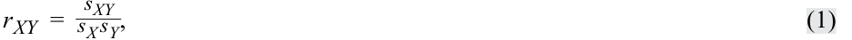
where sXY is the sample covariance between the X and Y variables, sX is the standard deviation of the X variable, and sY is the standard deviation of the Y variable. We often drop the subscript to represent the correlation as simply r .
trong đó $s_{XY}$ là hiệp phương sai mẫu (sample covariance) giữa hai biến $X$ và $Y$, $s_X$ là độ lệch chuẩn của biến $X$, và $s_Y$ là độ lệch chuẩn của biến $Y$. Chúng ta thường lược bỏ chỉ số dưới để biểu thị tương quan đơn giản là $r$.
Therefore, you can see from this formula that each observation is compared with its respective variable mean and that, because of the covariance, it matters how much each observation differs from its respective variable mean. Note that the covariance drives the sign of the correlation.
Do đó, bạn có thể thấy từ công thức này rằng mỗi quan sát được so sánh với giá trị trung bình của biến tương ứng và, do có hiệp phương sai, mức độ chênh lệch của mỗi quan sát so với giá trị trung bình của biến tương ứng đóng vai trò rất quan trọng. Lưu ý rằng hiệp phương sai quyết định dấu của hệ số tương quan.
If the two variables are normally distributed, we can test to determine whether the null hypothesis ( H 0: ρ = 0) should be rejected using the sample correlation, r . The formula for the t -test is as follows:
Nếu hai biến số có phân phối chuẩn, chúng ta có thể kiểm định để xác định xem giả thuyết không ($H_0: \rho = 0$) có nên bị bác bỏ hay không bằng cách sử dụng tương quan mẫu, $r$. Công thức cho kiểm định $t$ như sau:
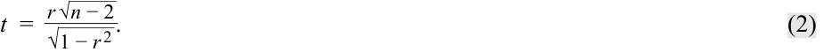
This test statistic is t -distributed with n − 2 degrees of freedom. One practical observation concerning Equation 2 is that the magnitude of r needed to reject the null hypothesis decreases as sample size n increases, for two reasons. First, as n increases, the number of degrees of freedom increases and the absolute value of the critical value of the t -statistic decreases. Second, the absolute value of the numerator increases with larger n , resulting in a larger magnitude of the calculated t -statistic. For example, with sample size n = 12, r = 0.35 results in a t -statistic of 1.182, which is not different from zero at the 0.05 level ( t α/2 = ±2.228). With a sample size of n = 32, the same sample correlation, r = 0.35, yields a t -statistic of 2.046, which is just significant at the 0.05 level ( t α/2 = ±2.042).
Thống kê kiểm định này có phân phối $t$ với $n - 2$ bậc tự do. Một nhận xét thực tế liên quan đến Phương trình 2 là độ lớn của $r$ cần thiết để bác bỏ giả thuyết không sẽ giảm xuống khi kích thước mẫu $n$ tăng lên, vì hai lý do. Thứ nhất, khi $n$ tăng lên, số bậc tự do tăng lên và giá trị tuyệt đối của giá trị tới hạn của thống kê $t$ giảm xuống. Thứ hai, giá trị tuyệt đối của tử số tăng lên khi $n$ lớn hơn, dẫn đến độ lớn của thống kê $t$ tính toán được lớn hơn. Ví dụ, với kích thước mẫu $n = 12$, $r = 0.35$ mang lại thống kê $t$ là $1.182$, không khác $0$ ở mức ý nghĩa $0.05$ ($t_{\alpha/2} = \pm 2.228$). Với kích thước mẫu $n = 32$, cùng mức tương quan mẫu đó, $r = 0.35$, mang lại thống kê $t$ là $2.046$, vừa đủ có ý nghĩa thống kê ở mức $0.05$ ($t_{\alpha/2} = \pm 2.042$).
Another way to make this point is that when sampling from the same population, a false null hypothesis is more likely to be rejected (i.e., the power of the test increases) as we increase the sample size, all else equal, because a higher number of observations increases the numerator of the test statistic. We show this in Exhibit 1 for three different sample correlation coefficients, with the corresponding calculated t -statistics and significance at the 5 percent level for a two-sided alternative hypothesis. As the sample size increases, significance is more likely to be indicated, but the rate of achieving this significance depends on the sample correlation coefficient; the higher the sample correlation, the faster significance is achieved when increasing the sample size. As the sample sizes increase as ever-larger datasets are examined, the null hypothesis is almost always rejected and other tools of data analysis must be applied.
Một cách khác để diễn đạt điểm này là khi lấy mẫu từ cùng một tổng thể, một giả thuyết không đang sai có nhiều khả năng bị bác bỏ hơn (tức là lực kiểm định tăng lên) khi chúng ta tăng kích thước mẫu, với các yếu tố khác không đổi, bởi vì số lượng quan sát cao hơn làm tăng tử số của thống kê kiểm định. Chúng tôi thể hiện điều này trong Minh họa 1 cho ba hệ số tương quan mẫu khác nhau, với các thống kê $t$ tính toán được tương ứng và ý nghĩa thống kê ở mức $5\%$ cho một giả thuyết đối hai phía. Khi kích thước mẫu tăng lên, ý nghĩa thống kê có nhiều khả năng đạt được hơn, nhưng tốc độ đạt được ý nghĩa thống kê này phụ thuộc vào hệ số tương quan mẫu; tương quan mẫu càng cao thì càng nhanh đạt được ý nghĩa thống kê khi tăng kích thước mẫu. Khi kích thước mẫu tăng lên do các tập dữ liệu ngày càng lớn được xem xét, giả thuyết không hầu như luôn bị bác bỏ và cần phải áp dụng các công cụ phân tích dữ liệu khác.
Exhibit 1: Calculated Test Statistics for Different Sample Sizes and Sample Correlations with a 5 Percent Level of Significance
Minh họa 1: Các Thống kê Kiểm định Tính toán được cho các Kích thước Mẫu và Tương quan Mẫu Khác nhau với Mức Ý nghĩa 5% (Exhibit 1: Calculated Test Statistics for Different Sample Sizes and Sample Correlations with a 5 Percent Level of Significance)
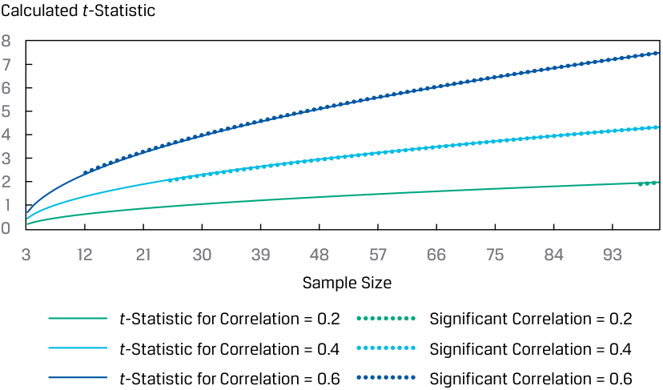
Chú thích hình ảnh: Đồ thị biểu diễn Thống kê $t$ tính toán được (Calculated t-Statistic) trên trục tung theo Kích thước mẫu (Sample Size) trên trục hoành cho các mức hệ số tương quan $r = 0.2, 0.4, 0.6$, đánh dấu vùng bắt đầu có ý nghĩa thống kê (Significant Correlation).
EXAMPLE 1
VÍ DỤ 1 (EXAMPLE 1)
Examining the Relationship between Returns on Investment One and Investment Two
Xem xét Mối quan hệ giữa Tỷ suất sinh lợi trên Khoản đầu tư Một và Khoản đầu tư Hai (Examining the Relationship between Returns on Investment One and Investment Two)
An analyst is examining the annual returns for Investment One and Investment Two over 33 years, as displayed in Exhibit 2.
Một nhà phân tích đang xem xét tỷ suất sinh lợi hàng năm của Khoản đầu tư Một và Khoản đầu tư Hai trong 33 năm, như được hiển thị trong Minh họa 2.
Exhibit 2: Returns for Investments One and Two over 33 Years
Minh họa 2: Tỷ suất sinh lợi của Khoản đầu tư Một và Hai trong 33 Năm (Exhibit 2: Returns for Investments One and Two over 33 Years)
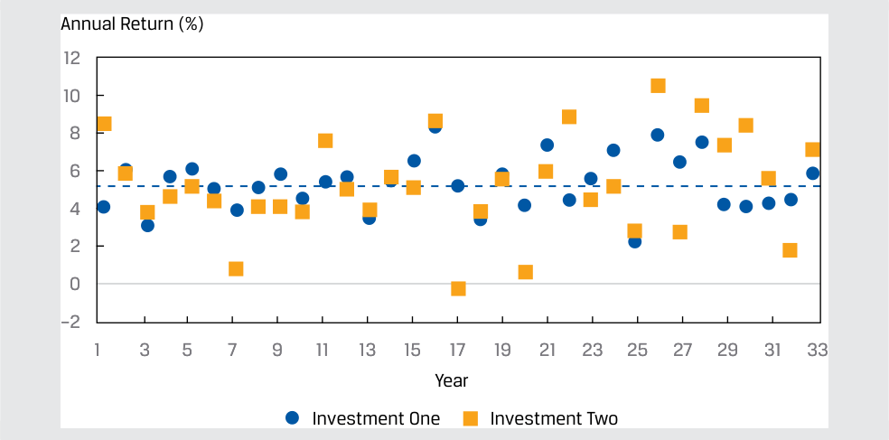
Chú thích hình ảnh: Đồ thị chuỗi thời gian của Tỷ suất sinh lợi hàng năm (Annual Return (%)) từ Năm 1 đến Năm 33 của Khoản đầu tư Một (Investment One) và Khoản đầu tư Hai (Investment Two).
Although this time series plot provides some useful information, the analyst is most interested in quantifying how the returns of these two series are related, so she calculates the correlation coefficient, equal to 0.43051, between these series.
Mặc dù đồ thị chuỗi thời gian này cung cấp một số thông tin hữu ích, nhà phân tích quan tâm nhất đến việc định lượng mối liên hệ giữa tỷ suất sinh lợi của hai chuỗi này, vì vậy cô tính hệ số tương quan giữa hai chuỗi này và thu được kết quả bằng $0.43051$.
- Có mối tương quan dương có ý nghĩa thống kê giữa hai chuỗi tỷ suất sinh lợi này hay không nếu cô sử dụng mức ý nghĩa $1\%$?
- Is there a significant positive correlation between these two return series if she uses a 1 percent level of significance? Solution:
Lời giải (Solution):
| Step 1 | State the hypotheses. | H 0:ρ≤ 0 versus_H_ a:ρ> 0 |
|---|---|---|
| Step 2 | Identify the appropriate test statistic. |
t=r √ _n− 2 √ 1 −r 2 |
| Step 3 | Specify the level of significance. |
1% |
| Step 4 | State the decision rule. | With 33 − 2 = 31 degrees of freedom and a one-sided test with a 1% level of significance, the critical value is 2.45282. We reject the null hypothesis if the calculated_t_-statistic is greater than 2.45282. |
| Step 5 | Calculate the test statistic. | t =0.43051√ _ 33 − 2 __ √ ___ 1 − 0.18534 = 2.65568 |
| Step 6 | Make a decision. | Reject the null hypothesis because the calculated_t_-statistic is greater than 2.45282. Evidence is sufficient to reject the_H_0in favor of Ha, that the correla- tion between the annual returns of these two investments is positive. |
| Bước 1 (Step 1) | Phát biểu các giả thuyết. | $$H_0: \rho \le 0 \text{ đối lập với } H_a: \rho > 0$$ |
|---|---|---|
| Bước 2 (Step 2) | Xác định thống kê kiểm định phù hợp. | $$t = \frac{r\sqrt{n - 2}}{\sqrt{1 - r^2}}$$ |
| Bước 3 (Step 3) | Xác định mức ý nghĩa. | $1\%$ |
| Bước 4 (Step 4) | Phát biểu quy tắc quyết định. | Với $33 - 2 = 31$ bậc tự do và kiểm định một phía với mức ý nghĩa $1\%$, giá trị tới hạn là $2.45282$. Chúng ta bác bỏ giả thuyết không nếu thống kê $t$ tính toán được lớn hơn $2.45282$. |
| Bước 5 (Step 5) | Tính toán thống kê kiểm định. | $$t = \frac{0.43051\sqrt{33 - 2}}{\sqrt{1 - 0.18534}} = 2.65568$$ |
| Bước 6 (Step 6) | Đưa ra quyết định. | Bác bỏ giả thuyết không bởi vì thống kê $t$ tính toán được lớn hơn $2.45282$. Có đủ bằng chứng để bác bỏ $H_0$ nhằm ủng hộ $H_a$, tức là tương quan giữa tỷ suất sinh lợi hàng năm của hai khoản đầu tư này là dương. |
EXAMPLE 2
VÍ DỤ 2 (EXAMPLE 2)
Correlation with the S&P 500 Returns
Tương quan với Tỷ suất sinh lợi S&P 500 (Correlation with the S&P 500 Returns)
- Exhibit 3 shows the sample correlations between the monthly returns for four different mutual funds and the S&P 500. The correlations are based on 36 monthly observations. The funds are as follows:
- Minh họa 3 cho thấy tương quan mẫu giữa tỷ suất sinh lợi hàng tháng của bốn quỹ tương hỗ khác nhau và chỉ số S&P 500. Các hệ số tương quan dựa trên 36 quan sát hàng tháng. Các quỹ như sau:
Exhibit 3: Sample Correlations between Monthly Returns and the S&P 500
Minh họa 3: Tương quan Mẫu giữa Tỷ suất sinh lợi Hàng tháng và S&P 500 (Exhibit 3: Sample Correlations between Monthly Returns and the S&P 500)
| Fund 1 | Large-cap fund | |||
|---|---|---|---|---|
| Fund 2 | Mid-cap fund | |||
| Fund 3 | Large-cap value fund | |||
| Fund 4 | Emerging market fund | |||
| S&P 500 | US domestic stock index | |||
| Fund 1 Fund 2 |
Fund 3 | Fund 4 | S&P 500 | |
| Fund 1 | 1 | |||
| Fund 2 | 0.9231 1 |
|||
| Fund 3 | 0.4771 0.4156 |
1 |
- Quỹ 1 (Fund 1): Quỹ vốn hóa lớn (Large-cap fund)
- Quỹ 2 (Fund 2): Quỹ vốn hóa trung bình (Mid-cap fund)
- Quỹ 3 (Fund 3): Quỹ giá trị vốn hóa lớn (Large-cap value fund)
- Quỹ 4 (Fund 4): Quỹ thị trường mới nổi (Emerging market fund)
- S&P 500: Chỉ số cổ phiếu nội địa Hoa Kỳ (US domestic stock index)
| Fund 4 | 0.7111 | 0.7238 | 0.3102 | 1 |
|---|---|---|---|---|
| S&P 500 | 0.8277 | 0.8223 | 0.5791 | 0.7515 1 |
| Quỹ 1 (Fund 1) | Quỹ 2 (Fund 2) | Quỹ 3 (Fund 3) | Quỹ 4 (Fund 4) | S&P 500 | |
|---|---|---|---|---|---|
| Quỹ 1 (Fund 1) | 1 | ||||
| Quỹ 2 (Fund 2) | 0.9231 | 1 | |||
| Quỹ 3 (Fund 3) | 0.4771 | 0.4156 | 1 | ||
| Quỹ 4 (Fund 4) | 0.7111 | 0.7238 | 0.3102 | 1 | |
| S&P 500 | 0.8277 | 0.8223 | 0.5791 | 0.7515 | 1 |
Test the null hypothesis that each of these correlations, individually, is equal to zero against the alternative hypothesis that it is not equal to zero. Use a 5 percent significance level and critical t -values of ±2.032.
Hãy kiểm định giả thuyết không rằng mỗi hệ số tương quan này, xét riêng lẻ, bằng $0$ đối lập với giả thuyết đối rằng nó khác $0$. Sử dụng mức ý nghĩa $5\%$ và các giá trị $t$ tới hạn là $\pm 2.032$.
Solution:
Lời giải (Solution):
The hypotheses are H 0: ρ = 0 and Ha : ρ ≠ 0. The calculated test statistics are based on the formula
Các giả thuyết là $H_0: \rho = 0$ và $H_a: \rho \ne 0$. Các thống kê kiểm định tính toán được dựa trên công thức:
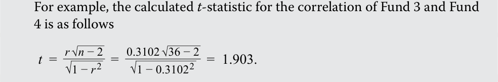
Repeating this calculation for the entire matrix of correlations gives the following:
Ví dụ, thống kê $t$ tính toán được cho tương quan của Quỹ 3 và Quỹ 4 như sau:
Lặp lại phép tính này cho toàn bộ ma trận tương quan mang lại kết quả sau:
Calculated t -Statistics for Correlations
Thống kê $t$ Tính toán được cho các Hệ số Tương quan (Calculated t-Statistics for Correlations)
| Fund 1 | Fund 2 | Fund 3 | Fund 4 | S&P 500 | |
|---|---|---|---|---|---|
| Fund 1 | |||||
| Fund 2 | 13.997 | ||||
| Fund 3 | 3.165 | 2.664 | |||
| Fund 4 | 5.897 | 6.116 | 1.903 | ||
| S&P 500 | 8.600 | 8.426 | 4.142 | 6.642 |
| Quỹ 1 (Fund 1) | Quỹ 2 (Fund 2) | Quỹ 3 (Fund 3) | Quỹ 4 (Fund 4) | S&P 500 | |
|---|---|---|---|---|---|
| Quỹ 1 (Fund 1) | |||||
| Quỹ 2 (Fund 2) | 13.997 | ||||
| Quỹ 3 (Fund 3) | 3.165 | 2.664 | |||
| Quỹ 4 (Fund 4) | 5.897 | 6.116 | 1.903 | ||
| S&P 500 | 8.600 | 8.426 | 4.142 | 6.642 |
With critical values of ±2.032, with the exception of the correlation between Fund 3 and Fund 4 returns, we reject the null hypothesis for these correlations. In other words, evidence is sufficient to indicate that the correlations are different from zero, with the exception of the correlation of returns between Fund 3 and Fund 4.
Với các giá trị tới hạn là $\pm 2.032$, ngoại trừ tương quan giữa tỷ suất sinh lợi của Quỹ 3 và Quỹ 4, chúng ta bác bỏ giả thuyết không cho tất cả các hệ số tương quan này. Nói cách khác, có đủ bằng chứng để chỉ ra rằng các hệ số tương quan đều khác $0$, ngoại trừ tương quan tỷ suất sinh lợi giữa Quỹ 3 và Quỹ 4.
We could use software to determine the critical values:
Chúng ta có thể sử dụng phần mềm để xác định các giá trị tới hạn:
Excel
Excel
R
[T.INV(0.025,34) and T.INV(0.975,34)]
R
[qt(c(.025,.975),34)]
Python
Python
~~[from scipy.stats import t and t.ppf(.025,34) and t.ppf(.975,34)]~~
[from scipy.stats import t and t.ppf(.025,34) and t.ppf(.975,34)]
We also could use software to determine the p -value for the calculated test statistic to enable a comparison with the level of significance. For example, for t = 2.664, the p -value is 0.01172:
Chúng ta cũng có thể sử dụng phần mềm để xác định giá trị $p$ (p-value) cho thống kê kiểm định tính toán được nhằm so sánh với mức ý nghĩa. Ví dụ, đối với $t = 2.664$, giá trị $p$ là $0.01172$:
~~[(1-T.DIST(2.664,34,TRUE))2]~~ R ~~[(1-pt(2.664,34))2]~~
- Excel:
[(1-T.DIST(2.664,34,TRUE))*2] - R:
[(1-pt(2.664,34))*2] - Python:
[from scipy.stats import t (1-t.cdf(2.664,34))*2]
Python
~~[from scipy.stats import t (1-t.cdf(2.664,34))*2]~~
Kiểm định Phi tham số về Tương quan: Hệ số Tương quan Hạng Spearman (Non-Parametric Test of Correlation: The Spearman Rank Correlation Coefficient)
Non-Parametric Test of Correlation: The Spearman Rank Correlation Coefficient
Khi chúng ta tin rằng tổng thể đang xem xét lệch đáng kể so với phân phối chuẩn, chúng ta có thể sử dụng một kiểm định dựa trên hệ số tương quan hạng Spearman (Spearman rank correlation coefficient), $r_S$. Hệ số tương quan hạng Spearman về cơ bản tương đương với hệ số tương quan Pearson như đã định nghĩa trước đó, nhưng nó được tính toán trên thứ hạng (ranks) của hai biến số (ví dụ: $X$ và $Y$) trong các mẫu tương ứng của chúng. Phép tính $r_S$ đòi hỏi các bước sau:
When we believe that the population under consideration meaningfully departs from normality, we can use a test based on the Spearman rank correlation coefficient , rS . The Spearman rank correlation coefficient is essentially equivalent to the Pearson correlation coefficient as defined earlier, but it is calculated on the ranks of the two variables (e.g., X and Y ) within their respective samples. The calculation of rS requires the following steps:
1. Rank the observations on X from largest to smallest. Assign the number 1 to the observation with the largest value, the number 2 to the observation with second largest value, and so on. In case of ties, assign to each tied observation the average of the ranks that they jointly occupy. For example, if the third and fourth largest values are tied, we assign both observations the rank of 3.5 (the average of 3 and 4). Perform the same procedure for the observations on Y.
1. Xếp hạng các quan sát của $X$ từ lớn nhất đến nhỏ nhất. Gán số 1 cho quan sát có giá trị lớn nhất, số 2 cho quan sát có giá trị lớn thứ hai, và cứ tiếp tục như vậy. Trong trường hợp có các giá trị bằng nhau (ties), hãy gán cho mỗi quan sát đồng hạng giá trị trung bình của các thứ hạng mà chúng cùng chiếm giữ. Ví dụ, nếu giá trị lớn thứ ba và thứ tư bằng nhau, chúng ta gán cho cả hai quan sát thứ hạng là $3.5$ (trung bình cộng của 3 và 4). Thực hiện thủ tục tương tự cho các quan sát của $Y$.
2. Calculate the difference, di, between the ranks for each pair of observations on X and Y , and then calculate di2 (the squared difference in ranks).
2. Tính chênh lệch, $d_i$, giữa các thứ hạng cho mỗi cặp quan sát của $X$ và $Y$, và sau đó tính $d_i^2$ (bình phương chênh lệch thứ hạng).
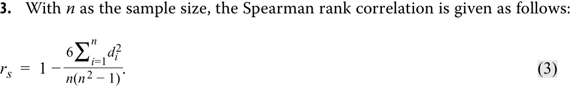
Suppose an analyst is examining the relationship between returns for two investment funds, A and B, of similar risk over 35 years. She is concerned that the assumptions for the parametric correlation may not be met, so she decides to test Spearman rank correlations. Her hypotheses are H 0: rS = 0 and Ha : rS ≠ 0. She gathers the returns, ranks the returns for each fund, and calculates the difference in ranks and the squared differences. A partial table is provided in Exhibit 4.
3. Với $n$ là kích thước mẫu, tương quan hạng Spearman được cho như sau:
Giả sử một nhà phân tích đang xem xét mối quan hệ giữa tỷ suất sinh lợi của hai quỹ đầu tư, A và B, có rủi ro tương tự nhau trong 35 năm. Cô lo ngại rằng các giả định cho tương quan tham số có thể không được đáp ứng, vì vậy cô quyết định kiểm định tương quan hạng Spearman. Các giả thuyết của cô là $H_0: r_S = 0$ và $H_a: r_S \ne 0$. Cô thu thập tỷ suất sinh lợi, xếp hạng tỷ suất sinh lợi cho mỗi quỹ, và tính chênh lệch thứ hạng cùng bình phương các chênh lệch. Một phần của bảng được cung cấp trong Minh họa 4.
Exhibit 4: Differences and Squared Differences in Ranks for Fund A and Fund B over 35 Years
Minh họa 4: Chênh lệch và Bình phương Chênh lệch Thứ hạng của Quỹ A và Quỹ B trong 35 Năm (Exhibit 4: Differences and Squared Differences in Ranks for Fund A and Fund B over 35 Years)
| Year | Fund A | Fund B | Rank of A | Rank of B | d | d2 |
|---|---|---|---|---|---|---|
| 1 | 2.453 | 1.382 | 27 | 31 | −4 | 16 |
| 2 | 3.017 | 3.110 | 24 | 24 | 0 | 0 |
| 3 | 4.495 | 6.587 | 19 | 7 | 12 | 144 |
| 4 | 3.627 | 3.300 | 23 | 23 | 0 | 0 |
| Năm (Year) | Quỹ A (Fund A) | Quỹ B (Fund B) | Thứ hạng của A (Rank of A) | Thứ hạng của B (Rank of B) | $d$ | $d^2$ |
|---|---|---|---|---|---|---|
| 1 | 2.453 | 1.382 | 27 | 31 | −4 | 16 |
| 2 | 3.017 | 3.110 | 24 | 24 | 0 | 0 |
| 3 | 4.495 | 6.587 | 19 | 7 | 12 | 144 |
| 4 | 3.627 | 3.300 | 23 | 23 | 0 | 0 |
⁝
| Year | Fund A | Fund B | Rank of A | Rank of B | d | d2 |
|---|---|---|---|---|---|---|
| 30 | 2.269 | 0.025 | 28 | 35 | −7 | 49 |
| 31 | 6.354 | 4.428 | 10 | 19 | −9 | 81 |
| 32 | 6.793 | 4.165 | 8 | 20 | −12 | 144 |
| 33 | 7.300 | 7.623 | 5 | 5 | 0 | 0 |
| 34 | 6.266 | 4.527 | 11 | 18 | −7 | 49 |
| 35 | 1.257 | 4.704 | 34 | 16 | 18 | 324 |
| Sum = | 2,202 |
| Năm (Year) | Quỹ A (Fund A) | Quỹ B (Fund B) | Thứ hạng của A (Rank of A) | Thứ hạng của B (Rank of B) | $d$ | $d^2$ |
|---|---|---|---|---|---|---|
| 30 | 2.269 | 0.025 | 28 | 35 | −7 | 49 |
| 31 | 6.354 | 4.428 | 10 | 19 | −9 | 81 |
| 32 | 6.793 | 4.165 | 8 | 20 | −12 | 144 |
| 33 | 7.300 | 7.623 | 5 | 5 | 0 | 0 |
| 34 | 6.266 | 4.527 | 11 | 18 | −7 | 49 |
| 35 | 1.257 | 4.704 | 34 | 16 | 18 | 324 |
| Tổng (Sum) = | 2,202 |
The Spearman rank correlation is as follows:
Tương quan hạng Spearman được tính như sau:
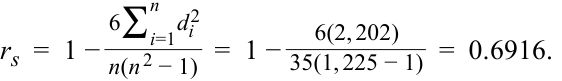
The test of hypothesis for the Spearman rank correlation depends on whether the sample is small or large ( n > 30). For small samples, the researcher requires a specialized table of critical values, but for large samples, we can conduct a t -test using the test statistic in Equation 2, which is t -distributed with n − 2 degrees of freedom.
Kiểm định giả thuyết cho tương quan hạng Spearman phụ thuộc vào việc mẫu là nhỏ hay lớn ($n > 30$). Đối với các mẫu nhỏ, nhà nghiên cứu cần một bảng giá trị tới hạn chuyên biệt, nhưng đối với các mẫu lớn, chúng ta có thể tiến hành kiểm định $t$ bằng cách sử dụng thống kê kiểm định trong Phương trình 2, có phân phối $t$ với $n - 2$ bậc tự do.
In this example, for a two-tailed test with a 5 percent significance level, the critical values for n − 2 = 35 − 2 = 33 degrees of freedom are ±2.0345. For the sample information in Exhibit 4, the calculated test statistic is as follows:
Trong ví dụ này, đối với kiểm định hai phía với mức ý nghĩa $5\%$, các giá trị tới hạn cho $n - 2 = 35 - 2 = 33$ bậc tự do là $\pm 2.0345$. Với thông tin mẫu trong Minh họa 4, thống kê kiểm định tính toán được như sau:
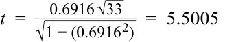
Accordingly, we reject the null hypothesis ( H 0: rS = 0), concluding that evidence is sufficient to indicate that the correlation between the returns of Fund A and Fund B is different from zero.
Theo đó, chúng ta bác bỏ giả thuyết không ($H_0: r_S = 0$), kết luận rằng có đủ bằng chứng để chỉ ra rằng tương quan giữa tỷ suất sinh lợi của Quỹ A và Quỹ B là khác $0$.
EXAMPLE 3
VÍ DỤ 3 (EXAMPLE 3)
Testing the Exchange Rate Correlation
Kiểm định Tương quan Tỷ giá Hối đoái (Testing the Exchange Rate Correlation)
An analyst gathers exchange rate data for five currencies relative to the US dollar. Upon inspection of the distribution of these exchange rates, she observes a departure from normality, especially with negative skewness for four of the series and positive skewness for the fifth. Therefore, she decides to examine the relationships among these currencies using Spearman rank correlations. She calculates these correlations between the currencies over 180 days, which are shown in the correlogram in Exhibit 5. In this correlogram, the lower triangle reports the pairwise correlations and the upper triangle provides a visualization of the magnitude of the correlations, with larger circles indicating the larger absolute value of the correlations and darker circles indicating correlations that are negative.
Một nhà phân tích thu thập dữ liệu tỷ giá hối đoái của năm đồng tiền so với đồng đô la Mỹ. Khi kiểm tra phân phối của các tỷ giá hối đoái này, cô quan sát thấy có sự lệch khỏi phân phối chuẩn, đặc biệt là độ lệch âm (negative skewness) đối với bốn chuỗi và độ lệch dương (positive skewness) đối với chuỗi thứ năm. Do đó, cô quyết định xem xét mối quan hệ giữa các đồng tiền này bằng cách sử dụng tương quan hạng Spearman. Cô tính toán các hệ số tương quan này giữa các đồng tiền trong 180 ngày, được hiển thị trong biểu đồ tương quan (correlogram) ở Minh họa 5. Trong biểu đồ tương quan này, tam giác dưới báo cáo các hệ số tương quan từng cặp và tam giác trên cung cấp hình ảnh trực quan về độ lớn của các hệ số tương quan, với các hình tròn lớn hơn biểu thị giá trị tuyệt đối lớn hơn của các hệ số tương quan và các hình tròn đậm hơn biểu thị các hệ số tương quan âm.
Exhibit 5: Spearman Rank Correlations between Exchanges Rates Relative to the US Dollar
Minh họa 5: Tương quan Hạng Spearman giữa các Tỷ giá Hối đoái so với Đô la Mỹ (Exhibit 5: Spearman Rank Correlations between Exchanges Rates Relative to the US Dollar)
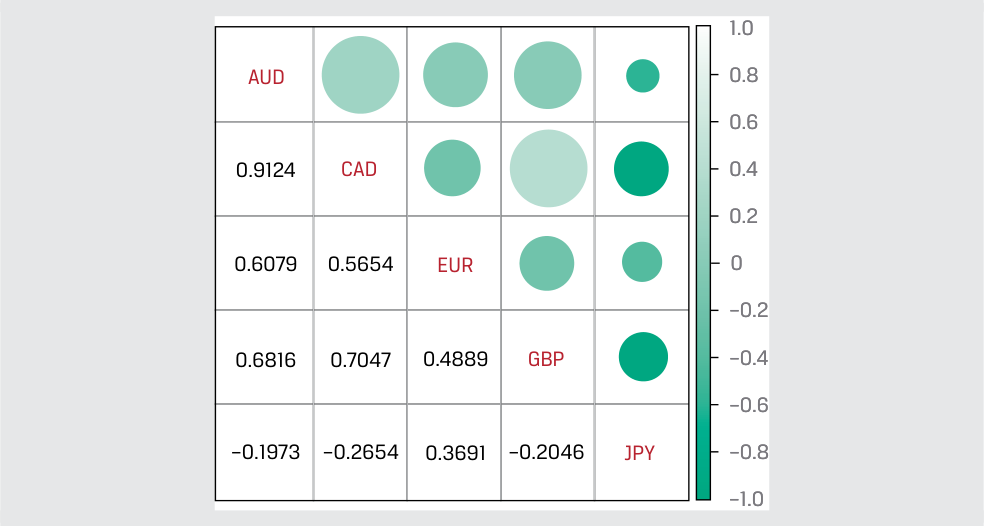
Chú thích hình ảnh: Biểu đồ ma trận tương quan (correlogram) giữa 5 đồng tiền (AUD, CAD, EUR, GBP, JPY) so với USD, hiển thị giá trị số ở nửa dưới và biểu tượng hình tròn theo thang màu từ -1.0 đến 1.0 ở nửa trên.
- For any of these pairwise Spearman rank correlations, can we reject the null hypothesis of no correlation ( H 0: rS = 0 and Ha : rS ≠ 0) at the 5 percent level of significance?
- Đối với bất kỳ tương quan hạng Spearman từng cặp nào trong số này, chúng ta có thể bác bỏ giả thuyết không về việc không có tương quan ($H_0: r_S = 0$ và $H_a: r_S \ne 0$) ở mức ý nghĩa $5\%$ hay không?
Solution:
Lời giải (Solution):
The critical t -values for 2.5 percent in each tail of the distribution are ±1.97338.
Các giá trị $t$ tới hạn cho $2.5\%$ ở mỗi đuôi của phân phối là $\pm 1.97338$.
There are five exchange rates, so there are 5C2 = {5! / [2!(5 -2)!]}, or 10, unique correlation pairs. Therefore, we need to calculate 10 t -statistics. For example, the correlation between EUR/USD and AUD/USD is 0.6079. The calculated t -statistic is
Có năm tỷ giá hối đoái, vì vậy có $_5C_2 = \frac{5!}{2!(5 - 2)!}$, hay 10 cặp tương quan duy nhất. Do đó, chúng ta cần tính 10 thống kê $t$. Ví dụ, tương quan giữa EUR/USD và AUD/USD là $0.6079$. Thống kê $t$ tính toán được là:
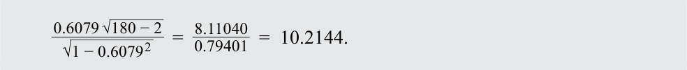
Repeating this t -statistic calculation for each pair of exchange rates yields the test statistics shown in Exhibit 6.
Lặp lại phép tính thống kê $t$ này cho mỗi cặp tỷ giá hối đoái mang lại các thống kê kiểm định được trình bày trong Minh họa 6.
Exhibit 6: Calculated Test Statistics for Test of Spearman Rank Correlations
Minh họa 6: Các Thống kê Kiểm định Tính toán được cho Kiểm định Tương quan Hạng Spearman (Exhibit 6: Calculated Test Statistics for Test of Spearman Rank Correlations)
| AUD/USD | CAD/USD | EUR/USD | GBP/USD | |
|---|---|---|---|---|
| CAD/USD | 29.7409 | |||
| EUR/USD | 10.2144 | 9.1455 | ||
| GBP/USD | 12.4277 | 13.2513 | 7.4773 | |
| JPY/USD | −2.6851 | −3.6726 | 5.2985 | −2.7887 |
| AUD/USD | CAD/USD | EUR/USD | GBP/USD | |
|---|---|---|---|---|
| CAD/USD | 29.7409 | |||
| EUR/USD | 10.2144 | 9.1455 | ||
| GBP/USD | 12.4277 | 13.2513 | 7.4773 | |
| JPY/USD | −2.6851 | −3.6726 | 5.2985 | −2.7887 |
The analyst should reject all 10 null hypotheses, because the calculated t -statistics for all exchange rate pairs fall outside the bounds of the two critical values. She should conclude that all the exchange rate pair correlations are different from zero at the 5 percent level.
Nhà phân tích nên bác bỏ tất cả 10 giả thuyết không, bởi vì các thống kê $t$ tính toán được cho tất cả các cặp tỷ giá hối đoái đều nằm ngoài giới hạn của hai giá trị tới hạn. Cô nên kết luận rằng tất cả các tương quan cặp tỷ giá hối đoái đều khác $0$ ở mức ý nghĩa $5\%$.
QUESTION SET
BỘ CÂU HỎI (QUESTION SET)
You are interested in whether excess risk-adjusted return (alpha) is correlated with mutual fund expense ratios for US large-cap growth funds. The following table presents the sample.
Bạn đang quan tâm đến việc liệu tỷ suất sinh lợi vượt trội đã điều chỉnh rủi ro (alpha) có tương quan với tỷ lệ chi phí (expense ratios) của quỹ tương hỗ đối với các quỹ tăng trưởng vốn hóa lớn tại Hoa Kỳ hay không. Bảng sau đây trình bày dữ liệu mẫu.
| Mutual Fund | Alpha | Expense Ratio |
|---|---|---|
| 1 | −0.52 | 1.34 |
| 2 | −0.13 | 0.40 |
| 3 | −0.50 | 1.90 |
| 4 | −1.01 | 1.50 |
| 5 | −0.26 | 1.35 |
| 6 | −0.89 | 0.50 |
| 7 | −0.42 | 1.00 |
| 8 | −0.23 | 1.50 |
| 9 | −0.60 | 1.45 |
| Quỹ Tương hỗ (Mutual Fund) | Alpha | Tỷ lệ Chi phí (Expense Ratio) |
|---|---|---|
| 1 | −0.52 | 1.34 |
| 2 | −0.13 | 0.40 |
| 3 | −0.50 | 1.90 |
| 4 | −1.01 | 1.50 |
| 5 | −0.26 | 1.35 |
| 6 | −0.89 | 0.50 |
| 7 | −0.42 | 1.00 |
| 8 | −0.23 | 1.50 |
| 9 | −0.60 | 1.45 |
- Formulate null and alternative hypotheses consistent with the verbal description of the research goal.
- Thiết lập giả thuyết không và giả thuyết đối nhất quán với mô tả bằng lời về mục tiêu nghiên cứu.
Solution:
Lời giải (Solution):
We have a “not equal to” alternative hypothesis:
Chúng ta có một giả thuyết đối dạng “khác” (not equal to):
H 0: ρ = 0 versus Ha : ρ ≠ 0
- Identify and justify the test statistic for conducting a test of the hypotheses in Part A.
- Xác định và giải thích lý do lựa chọn thống kê kiểm định để tiến hành kiểm định các giả thuyết ở Câu 1.
Solution:
Lời giải (Solution):
Mutual fund expense ratios are bounded from above and below; in practice, there is at least a lower bound on alpha (as any return cannot be less than −100 percent), and expense ratios cannot be negative. These variables may not be normally distributed, and the assumptions of a parametric test are not likely to be fulfilled. Thus, a nonparametric test appears to be appropriate.
Tỷ lệ chi phí của quỹ tương hỗ bị chặn trên và chặn dưới; trên thực tế, có ít nhất một cận dưới đối với alpha (vì bất kỳ tỷ suất sinh lợi nào cũng không thể nhỏ hơn $-100\%$), và tỷ lệ chi phí không thể âm. Các biến số này có thể không có phân phối chuẩn, và các giả định của một kiểm định tham số không có khả năng được thỏa mãn. Do đó, một kiểm định phi tham số có vẻ là phù hợp.
We would use the nonparametric Spearman rank correlation coefficient to conduct the test:
Chúng ta sẽ sử dụng hệ số tương quan hạng Spearman phi tham số để tiến hành kiểm định:
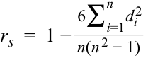
with the t -distributed test statistic of
với thống kê kiểm định có phân phối $t$ là:
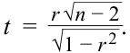
The calculation of the Spearman rank correlation coefficient is given in the following table.
Phép tính hệ số tương quan hạng Spearman được cho trong bảng tiếp theo (xem đầu Phần 2).